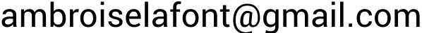

Signatures and models for syntax and operational semantics in the presence of variable binding
2nd December 2019
I am currently a postdoc in the Cogent team in Sydney. Before, I was a PhD student the Inria team Gallinette at LS2N in Nantes, supervised by Nicolas Tabareau and Tom Hirschowitz.
My research interests mainly lie in Type Theory and Category Theory: see my research and teaching statement.
The source code of this page largely comes from Théo's personal page.
You can contact me at .
2nd December 2019
with Xavier Leroy, at INRIA Paris
April 2016 — August 2016
with Nicolas Sangouard at University of Basel
Januar 2015 — March 2015
See my research and teaching statement for more details.
During my PhD (2016-2019), I mostly taught to engineering students of IMT Atlantique.
Tom Hirschowitz, Ambroise Lafont
Preprint
Peio Borthelle, Tom Hirschowitz, Ambroise Lafont
LICS 2020
André Hirschowitz, Tom Hirschowitz, Ambroise Lafont
FSCD 2020
Benedikt Ahrens, André Hirschowitz, Ambroise Lafont, Marco Maggesi
POPL 2020
Ambrus Kaposi, András Kovács, Ambroise Lafont
TYPES 2019 post-proceedings
Benedikt Ahrens, André Hirschowitz, Ambroise Lafont, Marco Maggesi
FSCD 2019
Benedikt Ahrens, André Hirschowitz, Ambroise Lafont, Marco Maggesi
CSL 2018
Melvyn Ho, Ambroise Lafont, Nicolas Sangouard and Pavel Sekatski (2018)
CSE Seminar at UNSW, 10 November 2020
Seminar LoVe at LIPN Paris 13, 29 October 2020
Seminar PPS at IRIF Paris 7, 26 November 2020
Seminar Proofs and algorithms at LIX Palaiseau, 22 February 2021
Seminar LDP at I2M Marseilles, 29 April 2021
Chocola seminar (ENS Lyon) March 2019
Ambroise Lafont, Nicolas Tabareau and Tom Hirschowitz
TYPES 2018
A formalisation of Fiore-Plotkin-Turi Abstract Syntax and Variable binding in the setting of skew-monoidal categories.
Constructing inductive-inductive datatypes from indexed inductive datatypes
Weak omega groupoids/categories in Coq
Weak omega groupoids in Agda
A commutative diagram editor in your browser